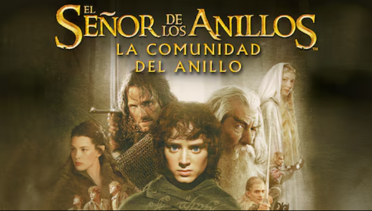

La Comunidad del Anillo
Frodo Bolsón hereda un misterioso anillo que alberga un poder ancestral. Al descubrirse su verdadera naturaleza, se forma la Comunidad del Anillo con el objetivo de llevarlo hasta Mordor y destruirlo antes de que regrese a manos de Sauron.